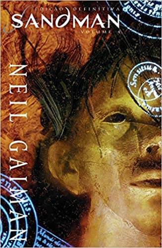
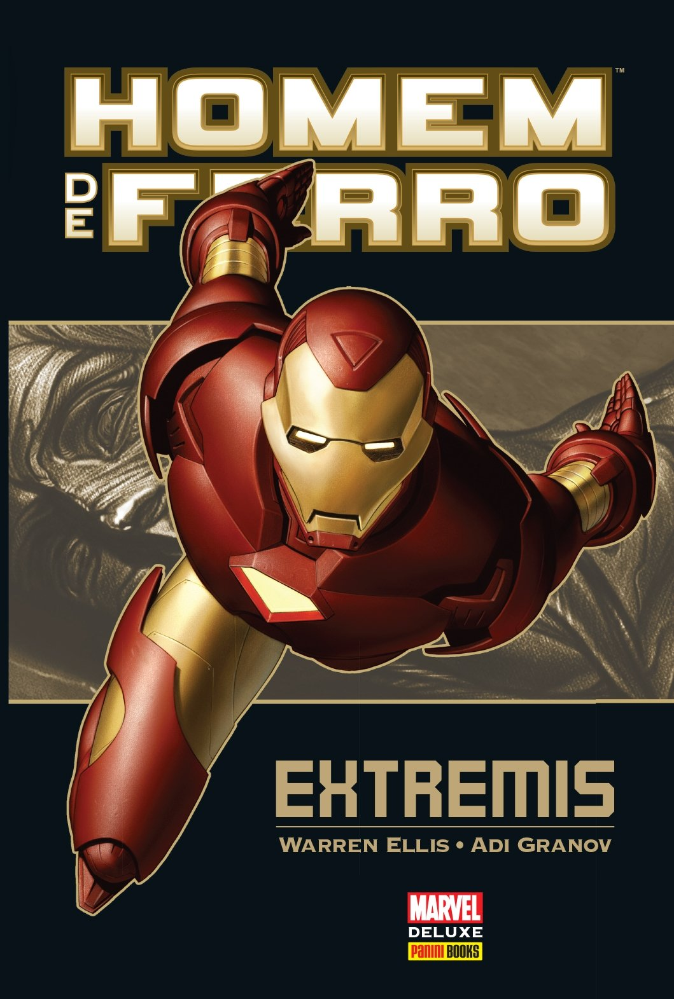
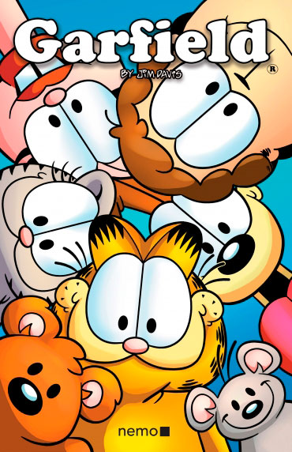

Você já se perguntou o que é
necessário para aprender inglês?
Sandman é uma série de histórias em quadrinhos escrita por Neil Gaiman. As edições contam as histórias de Sonho, o governante do sonhar (o mundo dos sonhos) e suas interações com os homens e outras criaturas.
Extremis é um arco de história de seis edições da série de quadrinhos Iron Man, publicado nas edições de um a seis em 2005 e 2006 pela Marvel Comics. Foi escrito por Warren Ellis e ilustrado por Adi Granov. Extremis eleva o status quo do Homem de Ferro, aumentando significativamente o poder de sua armadura.
 Batman - A piada mortal, é uma séries de hq's do Batman muito interessante, e uma boa escolha para ler em ingles. Os acontecimentos são um pouco pesados e existe bastante violencia, porém é bastante interessante.
Batman - A piada mortal, é uma séries de hq's do Batman muito interessante, e uma boa escolha para ler em ingles. Os acontecimentos são um pouco pesados e existe bastante violencia, porém é bastante interessante.
É um clássico muito famoso, que além de divertido, suas histórias por ser um texto mais simples são mais fáceis de internalizar e familiarizar-se com as novas palavras. Também é bom porque suas tiras são bem conhecidas e previsíveis, isso faz com que você fique mais focado nas palavras e em como elas são usadas no texto.